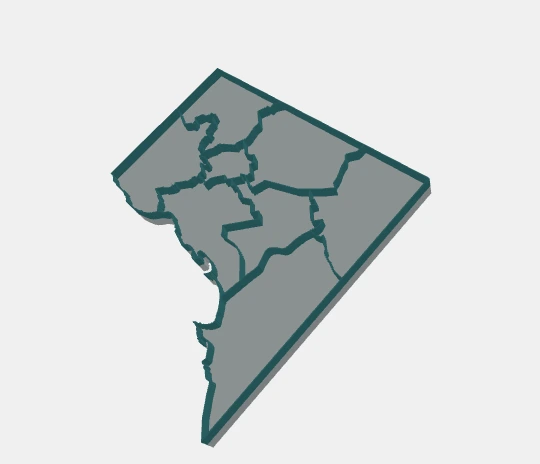

Boundaries → printable models
A place you can
put in your hands.
Turn polygon boundaries into a map with a solid base and raised walls. Size it in millimeters, make it your own, and take it to your slicer.
Made in your browser. Local files stay local.

GeoJSON / Polygon shapefile ZIP / SVG via converter
STL unified solid · 3MF aligned parts
From source to slicer
Three steps.
Your corner of the world.
Choose your boundaries
Try DC or Baltimore, paste a GeoJSON URL, or import a local polygon file. Have a drawing? The separate SVG converter prepares supported shapes.
Set the scale. Add your details.
Choose map size, wall width and base height. Connect islands with pads, keep them separate, or use a hull base. Place a hole or a raised label on an open face.
Preview, download, print
Inspect the map and 3D model together. Download one STL solid or a 3MF assembly with named Base, Walls and optional Labels parts, ready for your slicer setup.
Before you build: formats, privacy & print limits
Geographic input uses WGS84 polygon coordinates. Shapefile ZIPs need 2D polygons and a WGS84 .prj; DBF attributes are not imported. Local imports support files up to 10 MB and must be reimported after a reload. The SVG converter accepts a bounded subset of vector shapes and reports unsupported content.
Geometry processing runs in your browser. URL sources, map tiles and app dependencies are fetched over the network. Local imports are not uploaded. Converted drawings use local millimeters and do not imply a geographic location.
Import STL in millimeters; 3MF records its units and keeps parts aligned. Choose dimensions for your printer and review small features in your slicer. Connection and placement checks do not guarantee physical strength. Read the documentation ↗